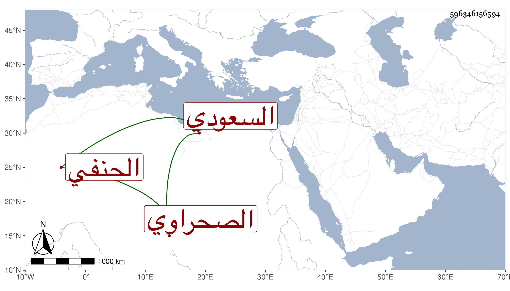

0902Sakhawi.DawLamic.ITO20230111-ara1.EIS1600.596346156594
Biography ID: 596346156594
688
أحمد بن يوسف بن أحمد الشهاب الصحراوي السعودي الحنفي . أحد الفضلاء بالعربية وغيرها غرق ببحر النيل في ربيع الأول سنة سبع وسبعين وهو ممن أخذ في الابتداء عن الشهاب الزواوي ثم عن التقيين الشمني والحصني وغيرهما وسمع على البدر النسابة والنور البارنباري والطبقة بقراءتي وأقرأ الطلبة وكان يجيء بيت ابني الأخميمي لذلك بل تردد إلي للسؤال عن قوله صلى الله عليه وسلم سني كسني يوسف وغيره رحمه الله .
